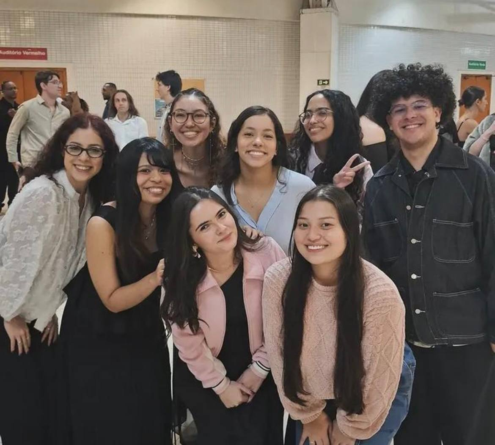
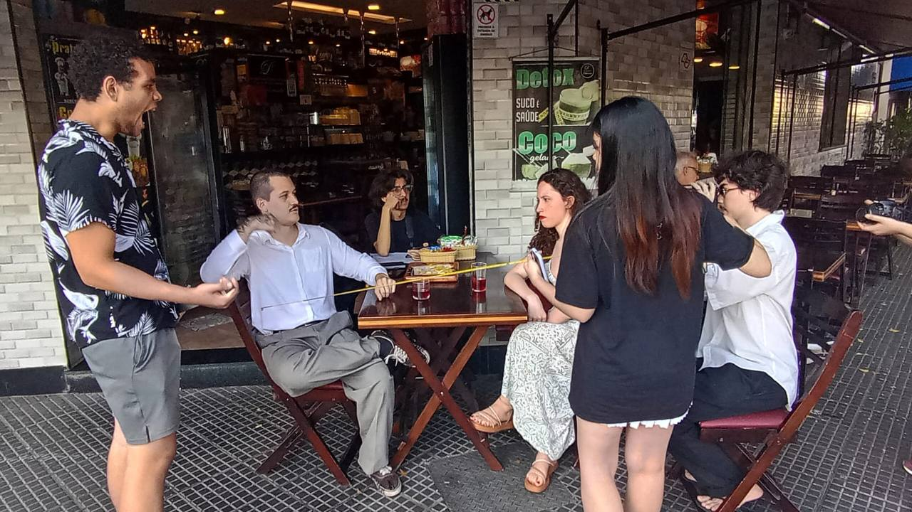
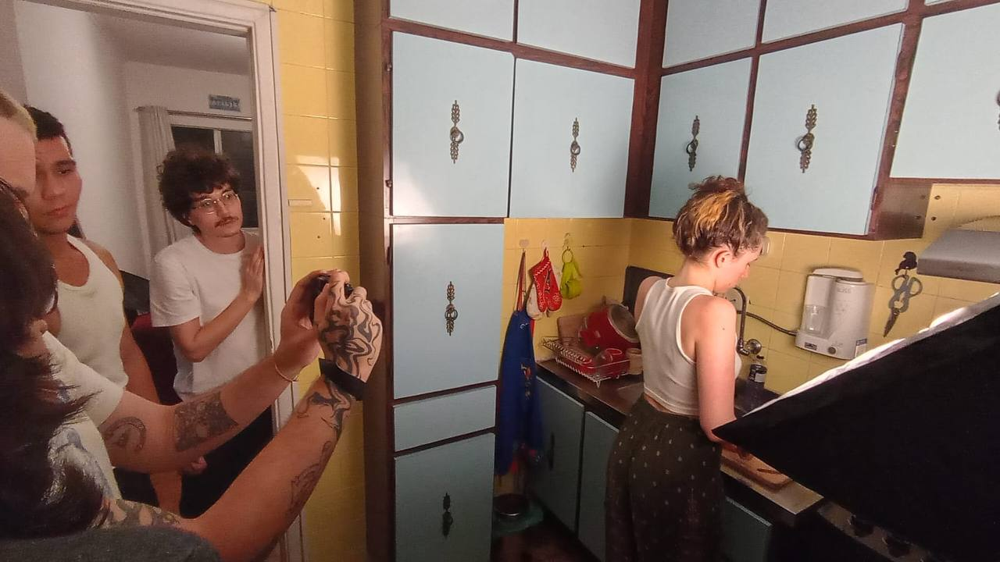
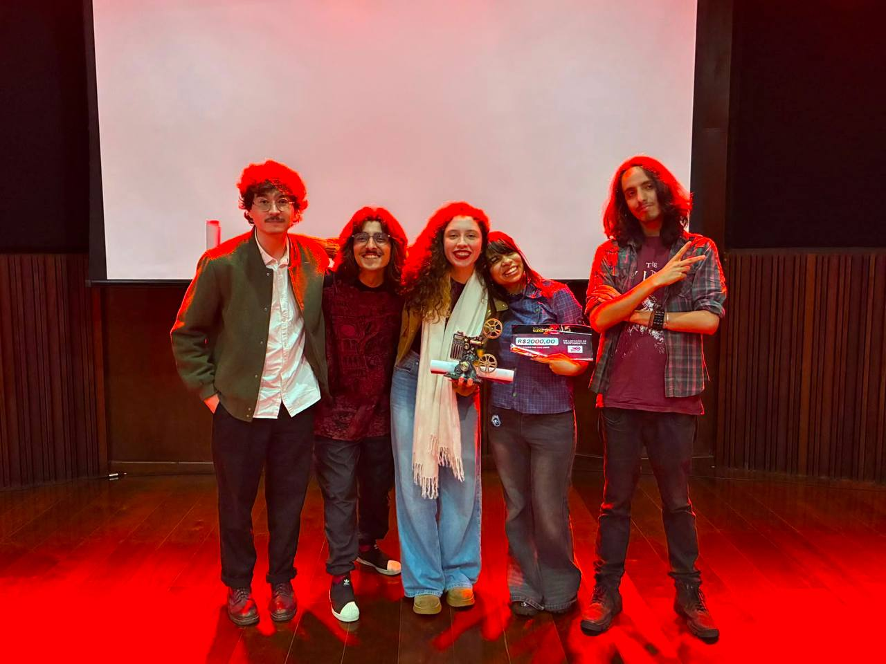
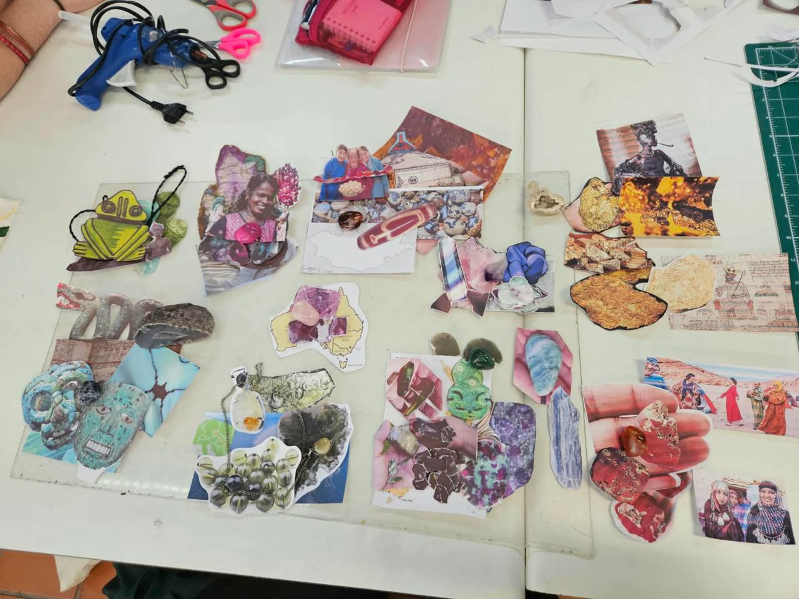

Prazer, eu sou a Julia!
Nascida em 2002, fui bailarina clássica por boa parte da vida, e foi a dança que despertou
meu amor pela cultura e, em especial, pelo cinema. Sou formada em Têxtil e Moda pela USP
e hoje curso Análise e Desenvolvimento de Sistemas, unindo minha paixão por criatividade
e análise de dados. Com este blog, quero trazer novidades: um novo jeito de pensar
sobre algo ou a descoberta de um novo filme.
Tudo na vida é sobre conexões, e o cinema é uma forma fenomenal de criá-las. Minha jornada com o cinema
Por muito tempo, eu acreditava que não gostava de cinema.
Para mim, filmes eram só o que passava nas salas e todo mundo comentava: os chamados blockbusters.
Até que, no ensino médio, visitei a ECA-USP e me apaixonei pelo curso de Audiovisual.
Pela primeira vez, consegui enxergar um lugar onde eu queria estar.
Decidi, então, estudar muito para passar na ECA e começar a estudar cinema para entender mais sobre essa arte.
No início dessa jornada, assisti a "Quando Duas Mulheres Pecam", de Ingmar Bergman,
e foi ali que a minha paixão por filmes começou a aflorar.
Depois disso, passei a ver cinema com um olhar mais crítico, e não só como entretenimento.
Foi por isso que comecei a listar o que assisto: quero evoluir e ampliar meus horizontes culturais e pessoais. :)
Em 2019, estudei fotografia e, em 2026, fiz a produção de set de um curta que levou o prêmio
de melhor curta-metragem logo na estreia no festival.
Amo cinema e amo poder me conectar com pessoas novas a partir dele.

Colação de grau, USP, 2026

Making of do curta, 2026

Nos bastidores do set, 2026

Premiação de melhor curta-metragem, festival Super-Off, 2026

Processo criativo para disciplina de acessórios, 2024